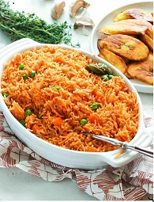

To jellof process
Jellof rice

Description
This Nigerian jellof rice were made in last african jrllof rice competion. it is well spiced and delicious
Ingredients
- Groundnut oil
- Onions
- Salt
- Maggi
- Green beans
- Crafish
- Fish
- Pepper
- Fresh tomatos
STEPS
- Paboil rice for 5mins
- Use a clearn pot and add some quantity of groundnut oil inside the pot and warm it
- Add onions plus tomatos plus salt then fry it with the oil till it dehydrated then add two cups of water
- Add pepper+crafish+salt+maggi+fish then turn it
- Finally, add the paboiled rice inside the stew and make sure the water is at the brim and boil till water dry